การสร้างสัญญาณทดสอบด้วยบอร์ด Arduino เพื่อฝึกวัดสัญญาณและตั้งค่าทริกเกอร์ด้วยออสซิลโลสโคป#
Keywords: Arduino, Test Signal Generation, Digital Oscilloscope, Trigger Types
- ออสซิลโลสโคปและประเภทของทริกเกอร์ (Oscilloscopes & Trigger Types)
- สัญญาณทดสอบกรณีที่ 1
- สัญญาณทดสอบกรณีที่ 2
- สัญญาณทดสอบกรณีที่ 3
- สัญญาณทดสอบกรณีที่ 4
- สัญญาณทดสอบกรณีที่ 5
ออสซิลโลสโคปและประเภทของทริกเกอร์ (Oscilloscopes & Trigger Types)#
ออสซิลโลสโคปแบบดิจิทัล (Digital Oscilloscope) เป็นเครื่องมือวัดที่สำคัญในการวิเคราะห์สัญญาณทางไฟฟ้า โดยสามารถแสดงรูปคลื่นของสัญญาณไฟฟ้าในโดเมนเวลา (Time Domain) ทำให้ผู้ใช้งานสามารถตรวจสอบลักษณะของสัญญาณ เช่น แอมพลิจูด ความถี่ คาบเวลา เฟส และสัญญาณรบกวนได้
หนึ่งในฟังก์ชันสำคัญของออสซิลโลสโคปคือ "ทริกเกอร์" (Trigger) ซึ่งจะต้องมีการกำหนดเงื่อนไขในการเริ่มต้นจับและแสดงผลรูปคลื่น เพื่อให้รูปคลื่นมีความนิ่ง และสามารถสังเกตรายละเอียดของสัญญาณได้อย่างชัดเจน หากไม่มีการตั้งค่าทริกเกอร์ที่เหมาะสม รูปคลื่นที่แสดงบนหน้าจออาจเลื่อนหรือไม่เสถียร ทำให้วิเคราะห์สัญญาณได้ยาก
ในปัจจุบัน ออสซิลโลสโคปแบบดิจิทัลรองรับการทำงานของทริกเกอร์หลายรูปแบบ เพื่อให้เหมาะกับลักษณะของสัญญาณและงานวิเคราะห์ที่แตกต่างกัน ตัวอย่างประเภทของทริกเกอร์ที่ใช้งานบ่อย ได้แก่
- Edge Trigger: เป็นประเภทของทริกเกอร์พื้นฐานที่นิยมใช้งานมากที่สุด และใช้ตรวจจับขอบสัญญาณขาขึ้น (Rising Edge) หรือขาลง (Falling Edge) หรือ ขาขึ้นขาลง (Any Edge)
- Pulse Width Trigger: ใช้ตรวจจับพัลส์ที่มีความกว้างมากกว่าหรือน้อยกว่าค่าที่กำหนด เหมาะสำหรับการค้นหาพัลส์ผิดปกติ
- Slope Trigger: เป็นทริกเกอร์ที่ใช้ตรวจจับ อัตราการเปลี่ยนแปลงของสัญญาณ (Slope หรือ Slew Rate) โดยออสซิลโลสโคปจะพิจารณาระยะเวลาที่สัญญาณเปลี่ยนจากระดับแรงดันหนึ่งไปยังอีกระดับแรงดันหนึ่ง หากสัญญาณเปลี่ยนเร็วหรือช้ากว่าค่าที่กำหนด จะเกิดการทริกเกอร์ขึ้น
- Pattern Trigger: ใช้ตรวจจับรูปแบบลอจิกของหลายสัญญาณพร้อมกัน เช่น การกำหนดให้บางช่องสัญญาณเป็น HIGH หรือ LOW ตามเงื่อนไขที่กำหนด
- Delay Trigger: เป็นทริกเกอร์ที่ใช้อ้างอิงจากเหตุการณ์ทริกเกอร์หลัก แล้วหน่วงเวลา (Delay) ก่อนเริ่มจับสัญญาณ หรือแสดงผลรูปคลื่น
- Runt Trigger: ใช้ตรวจจับพัลส์ที่มีระดับแรงดันไม่ถึงค่าที่กำหนด ซึ่งอาจเกิดจากความผิดปกติของวงจรดิจิทัล
- Timeout Trigger: ใช้ตรวจจับกรณีที่สัญญาณหยุดเปลี่ยนสถานะเป็นเวลานานกว่าที่กำหนด
ออสซิลโลสโคปหลายรุ่นมีฟังก์ชันเสริมสำหรับช่วยวิเคราะห์และถอดรหัสสัญญาณการสื่อสารข้อมูล ซึ่งพบได้บ่อยในระบบสมองกลฝังตัวและวงจรไมโครคอนโทรลเลอร์ เช่น UART, I2C และ SPI รวมถึงการสื่อสารผ่านอินเทอร์เฟซอย่าง RS232 และ RS485
การเลือกประเภททริกเกอร์และการตั้งค่าที่เหมาะสม มีความสำคัญอย่างมากต่อการวิเคราะห์สัญญาณ โดยเฉพาะในการตรวจจับสัญญาณผิดปกติที่เกิดขึ้นเพียงช่วงเวลาสั้น ๆ หรือเกิดขึ้นไม่สม่ำเสมอ ดังนั้น ผู้ใช้งานควรเข้าใจหลักการทำงานของทริกเกอร์แต่ละประเภท เพื่อให้สามารถใช้ออสซิลโลสโคปได้อย่างมีประสิทธิภาพและเหมาะสมกับงานวัดสัญญาณแต่ละลักษณะ
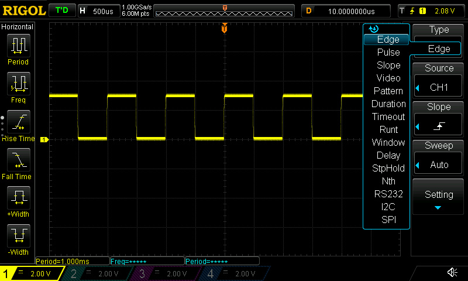
รูป: ตัวอย่างตัวเลือก Trigger Types สำหรับออสซิลโลสโคป RIGOL DS1054Z
การสร้างสัญญาณทดสอบด้วยบอร์ด Arduino ให้เหมาะกับประเภทของทริกเกอร์#
การฝึกใช้งานออสซิลโลสโคปและการเรียนรู้ทริกเกอร์ประเภทต่าง ๆ จำเป็นต้องอาศัยสัญญาณทดสอบที่เหมาะสมกับลักษณะของทริกเกอร์ในแต่ละกรณี
อุปกรณ์สำหรับสร้างสัญญาณ เช่น เครื่องกำเนิดสัญญาณ (Function Generator / Waveform Generator) สามารถนำมาใช้สร้างสัญญาณทดสอบได้ โดยอุปกรณ์สมัยใหม่ส่วนใหญ่สามารถกำหนดรูปแบบและพารามิเตอร์ของสัญญาณผ่านการโปรแกรมได้ อย่างไรก็ตาม อุปกรณ์ประเภทนี้มักมีราคาค่อนข้างสูง
อีกทางเลือกหนึ่งคือ การใช้บอร์ดไมโครคอนโทรลเลอร์ราคาประหยัด และเขียนโปรแกรมด้วย Arduino ได้ (เช่น Arduino Uno R3 หรือ Arduino Nano) แล้วมาเขียนโปรแกรม เพื่อสร้างสัญญาณทดสอบสำหรับการเรียนรู้และทดลองใช้งานทริกเกอร์ของออสซิลโลสโคปในรูปแบบต่าง ๆ ซึ่งช่วยลดต้นทุนและสามารถปรับแต่งลักษณะของสัญญาณให้เหมาะสมกับการทดลองได้ง่าย
นอกจากนี้ การสร้างสัญญาณด้วยไมโครคอนโทรลเลอร์ยังช่วยให้สามารถออกแบบสัญญาณผิดปกติ (Fault Injection) หรือเหตุการณ์เฉพาะ เช่น พัลส์แคบผิดปกติ สัญญาณรบกวน การหน่วงเวลา หรือสัญญาณที่เกิดขึ้นเป็นครั้งคราว เพื่อใช้ฝึกการตั้งค่าทริกเกอร์และการวิเคราะห์รูปคลื่นได้อย่างมีประสิทธิภาพ
ตัวอย่างสัญญาณทดสอบการทำงานของทริกเกอร์#
ถัดไปเป็นตัวอย่างรูปแบบของสัญญาณทดสอบแบบดิจิทัลที่สามารถสร้างได้โดยใช้บอร์ด Arduino Uno R3 / R4 และการเขียนโปรแกรม Arduino Sketch ตามรูปแบบของสัญญาณทดสอบ
สัญญาณทดสอบกรณีที่ 1#
สัญญาณทดสอบแบบแรกเป็นสัญญาณ PWM (Pulse Width Modulation) โดยแนะนำให้สร้างอย่างน้อย 2 สัญญาณ ที่มีความถี่เท่ากัน แต่มีค่าความกว้างพัลส์ หรือ Duty Cycle แตกต่างกัน
เมื่อนำสัญญาณลักษณะนี้มาใช้เป็นสัญญาณอินพุตสำหรับออสซิลโลสโคป ผู้ใช้งานสามารถวัดค่าพารามิเตอร์ต่าง ๆ ของสัญญาณได้ เช่น
- ความถี่ (Frequency)
- คาบเวลา (Period)
- ความกว้างพัลส์ช่วง HIGH
- ความกว้างพัลส์ช่วง LOW
- ค่า Duty Cycle
สำหรับการตั้งค่า Trigger แนะนำให้เลือกใช้ Edge Trigger ทั้งแบบ Rising Edge หรือ Falling Edge โดยเลือกช่องสัญญาณใดช่องสัญญาณหนึ่งเป็น Trigger Source เพื่อให้การแสดงผลรูปคลื่นมีความนิ่งและสามารถวัดค่าได้อย่างถูกต้อง
นอกจากนี้ การใช้สัญญาณ PWM หลายช่องที่มี Duty Cycle แตกต่างกัน ยังช่วยให้สามารถฝึกการเปรียบเทียบรูปคลื่น การวิเคราะห์ความสัมพันธ์ของสัญญาณ และการตั้งค่า Time Base ของออสซิลโลสโคปได้อีกด้วย
ตัวอย่างสัญญาณ PWM แบบ 4 ช่อง
- สัญญาณ PWM จำนวน 4 ช่องสัญญาณ ที่มีความถี่เท่ากัน มีขอบขาขึ้นตรงหรือใกล้เคียงกัน แต่มีค่า Duty Cycle ต่างกัน
- สัญญาณ PWM ที่มีขอบขาขึ้นไม่ตรงกัน และมีลักษณะตรงกับสัญญาณ Phase-Correct PWM ของ Arduino Uno R3 / Nano
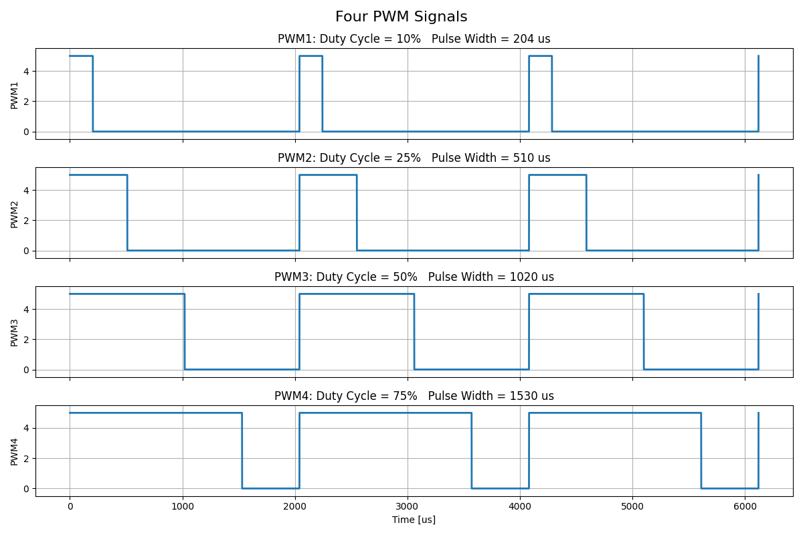
รูป: ตัวอย่างสัญญาณ PWM จำนวน 4 ช่องสัญญาณ ที่มีความถี่เท่ากัน มีขอบขาขึ้นตรงหรือใกล้เคียงกัน แต่มีค่า Duty Cycle ต่างกัน
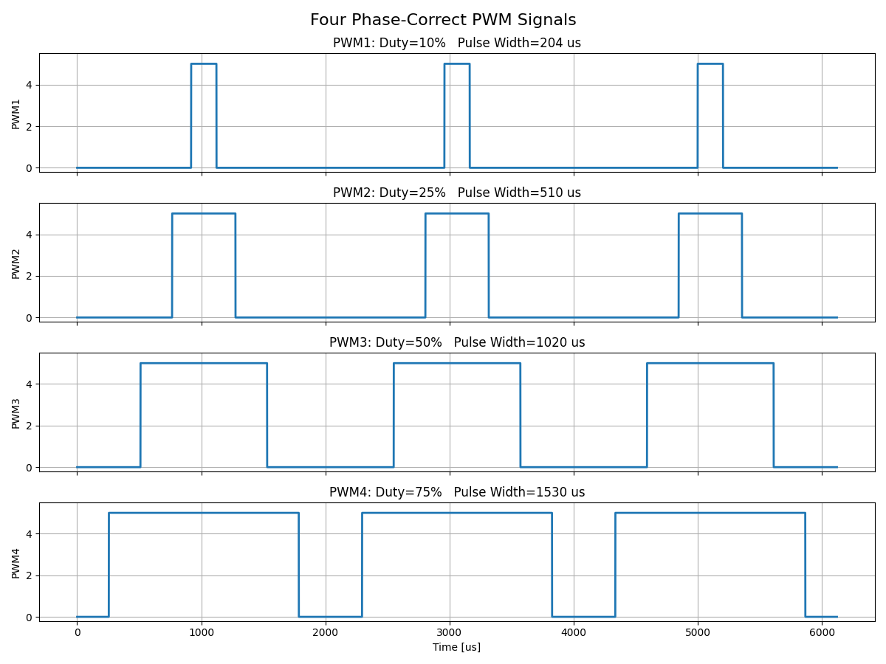
รูป: ตัวอย่างสัญญาณ PWM ที่มีขอบขาขึ้นไม่ตรงกัน และมีลักษณะตรงกับสัญญาณ Phase-Correct PWM ของ Arduino Uno R3 / Nano
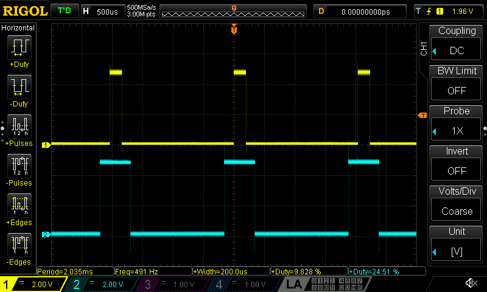
รูป: คลื่นสัญญาณ PWM จำนวน 4 ช่อง วัดสัญญาณโดยใช้ออสซิลโลสโคป
สัญญาณทดสอบกรณีที่ 2#
รูปแบบสัญญาณทดสอบถัดไป เป็นสัญญาณที่มีคาบเวลาคงที่และมีพัลส์ที่มีความกว้างคงที่ แต่ในบางคาบเวลาอาจเกิดพัลส์ที่มีความกว้างมากกว่าปกติ ซึ่งถือเป็นลักษณะความผิดปกติของสัญญาณ
การตั้งค่าทริกเกอร์ของออสซิลโลสโคปเพื่อใช้ตรวจจับเหตุการณ์ลักษณะนี้ สามารถเลือกใช้ Pulse Trigger โดยกำหนดเงื่อนไขให้ตรวจสอบว่า มีพัลส์ช่วงที่มีลอจิกเป็น HIGH กว้างเกินค่าที่กำหนดไว้หรือไม่ หากตรวจพบพัลส์ที่เข้าเงื่อนไข ออสซิลโลสโคปจะทำการ Trigger และแสดงรูปคลื่นในช่วงเวลาที่เกิดเหตุการณ์ดังกล่าว
Trigger ลักษณะนี้เหมาะสำหรับการตรวจจับพัลส์ผิดปกติ เช่น
- พัลส์ที่กว้างเกินค่าที่กำหนด
- พัลส์ที่แคบผิดปกติ
- "กลิตช์" (Glitch)
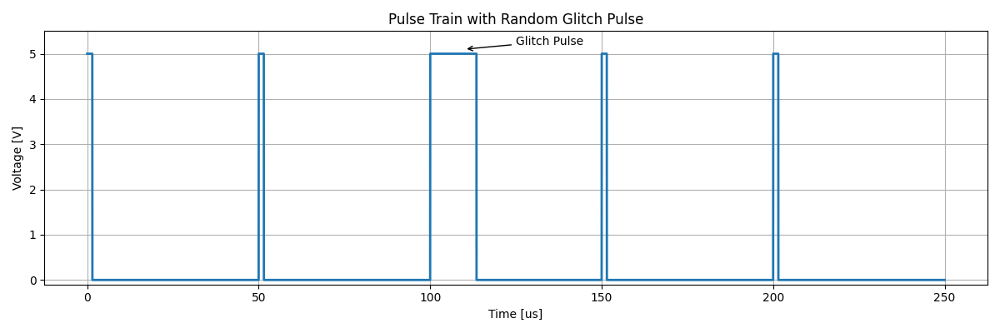
รูป: ตัวอย่างสัญญาณ Periodic Pulse Train ที่มีบางช่วงเวลาซึ่งพัลส์มีความกว้างมากกว่าค่าที่กำหนดไว้
ตัวอย่างการวัดสัญญาณด้วยออสซิลโลสโคป RIGOL โดยเลือกทริกเกอร์เป็นแบบ Pulse
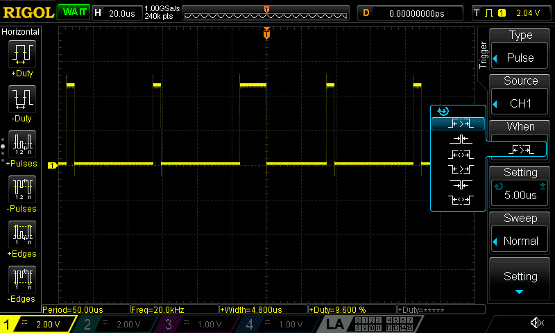
รูป: สัญญาณทดสอบที่มีบางช่วงเวลาเกิดพัลส์ที่มีความกว้างกว่าปกติ
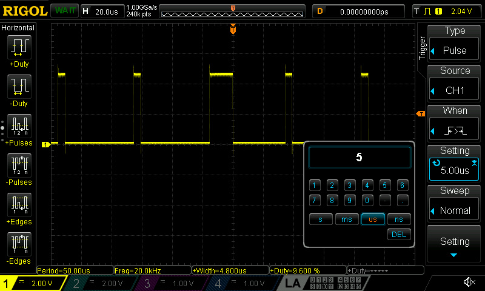
รูป: ตัวอย่างการตั้งค่าทริกเกอร์แบบ Pulse Width
สัญญาณทดสอบกรณีที่ 3#
รูปแบบสัญญาณทดสอบถัดไป เป็นสัญญาณที่มีคาบเวลาคงที่และมีพัลส์ที่มีความกว้างคงที่ แต่ในบางคาบเวลา อาจเกิดพัลส์หลายพัลส์ติดกันภายในช่วงเวลาที่ปกติควรมีเพียงหนึ่งพัลส์ ซึ่งถือเป็นตัวอย่างของสัญญาณที่เกิดความผิดพลาด
การตั้งค่า Trigger สำหรับตรวจจับเหตุการณ์ลักษณะนี้ อาจใช้วิธีตรวจสอบความกว้างของช่วงสัญญาณที่เป็น LOW เนื่องจากเมื่อเกิด Pulse Burst จะทำให้ช่วงเวลา LOW สั้นกว่าค่าปกติ
ในกรณีนี้สามารถใช้ Pulse Width Trigger หรือ Pulse Trigger โดยกำหนดเงื่อนไขให้ทริกเกอร์ ทำงานเมื่อช่วงสัญญาณ LOW มีความกว้างน้อยกว่าค่าที่กำหนดไว้ ซึ่งช่วยให้สามารถตรวจจับเหตุการณ์ที่เกิดพัลส์แทรกหรือพัลส์ซ้ำได้ง่ายขึ้น ในกรณีนี้ ทริกเกอร์ไม่ได้ตรวจจับ “จำนวนพัลส์” แต่ตรวจจับ “ช่วงเวลาระหว่างพัลส์” ที่ผิดปกติ
อีกทางเลือกหนึ่งคือ การใช้ทริกเกอร์แบบ Nth Edge กล่าวคือ การนับจำนวนพัลส์ที่เกิดขึ้นหลังจากช่วงเวลาที่เป็น LOW ตามช่วงเวลาที่กำหนด
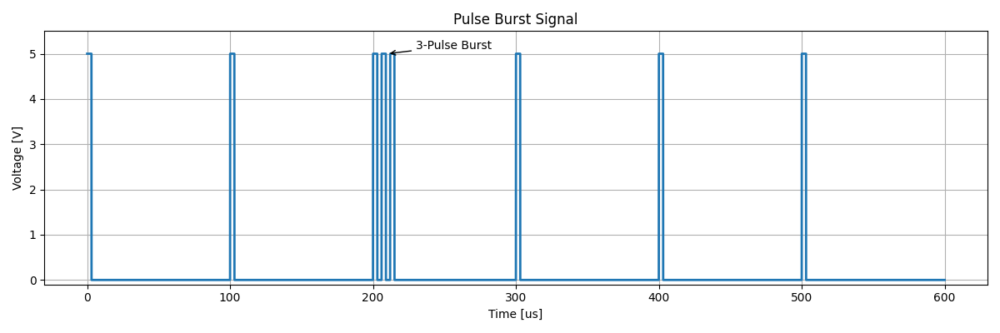
รูป: ตัวอย่างสัญญาณ Random Pulse Burst
ตัวอย่างการวัดสัญญาณด้วยออสซิลโลสโคป RIGOL
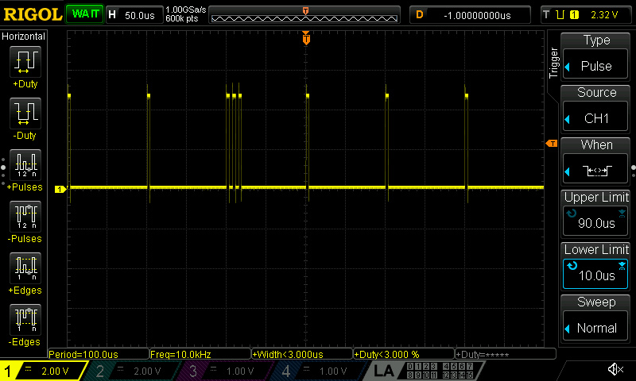
รูป: ตัวอย่างการตั้งค่าทริกเกอร์เพื่อตรวจหา Pulse Burst
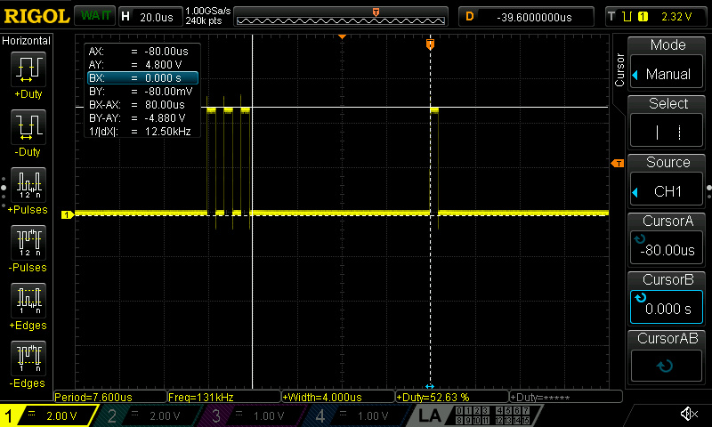
รูป: การใช้ฟังก์ชัน Cursors ลองวัดควากว้างของพัลส์ช่วงที่เป็น LOW
สัญญาณทดสอบกรณีที่ 4#
รูปแบบสัญญาณทดสอบถัดไป เป็นสัญญาณดิจิทัลจำนวนสองสัญญาณที่ทำงานแบบ Complementary Signals (A & B) โดยมีคาบเวลาคงที่ ในสภาวะปกติจะมีเพียงหนึ่งสัญญาณเท่านั้นที่มีลอจิกเป็น HIGH ขณะที่อีกสัญญาณจะมีลอจิกเป็นค่าตรงข้าม และทั้งสองสัญญาณจะสลับสถานะลอจิกสลับกันตามคาบเวลา
ระหว่างการสลับสถานะของสัญญาณ อาจมีช่วงเวลาสั้น ๆ ที่ทั้งสองสัญญาณเป็นลอจิก LOW พร้อมกัน ซึ่งเรียกว่า Dead Time โดยมีจุดประสงค์เพื่อป้องกันไม่ให้ทั้งสองสัญญาณเป็นลอจิก HIGH พร้อมกัน
หากเกิดกรณีที่ทั้งสองสัญญาณเป็นลอจิก HIGH พร้อมกัน (Overlap Condition) จะถือเป็นความผิดพลาดของสัญญาณ และในวงจรกำลังอาจทำให้เกิดกระแสลัดวงจร (Shoot-Through Current) ได้
การตั้งค่าทริกเกอร์ เพื่อตรวจจับข้อผิดพลาดลักษณะ Overlap Condition สามารถใช้ Pattern Trigger ได้ โดยกำหนดเงื่อนไขให้สัญญาณ A และ B มีลอจิกเป็น HIGH พร้อมกัน เมื่อเกิดเหตุการณ์ดังกล่าว ออสซิลโลสโคปจะทำการ Trigger และแสดงรูปคลื่นในช่วงเวลาที่เกิดความผิดพลาด
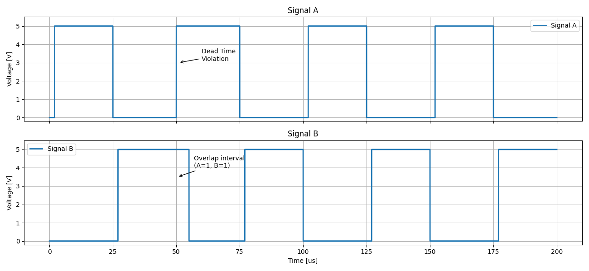
รูป: ตัวอย่างสัญญาณ Complementary Signals with Random Overlap
ตัวอย่างการวัดสัญญาณจริงจากบอร์ด Arduino ด้วยออสซิลโลสโคป RIGOL
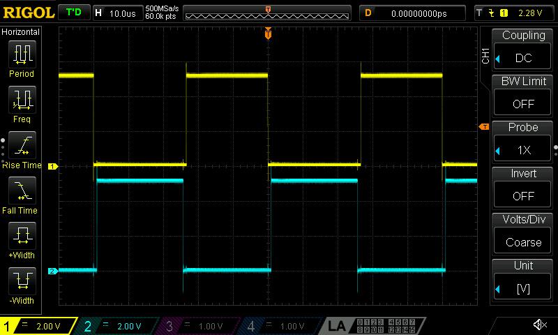
รูป: สัญญาณ A & B Complementary (with Dead Times)
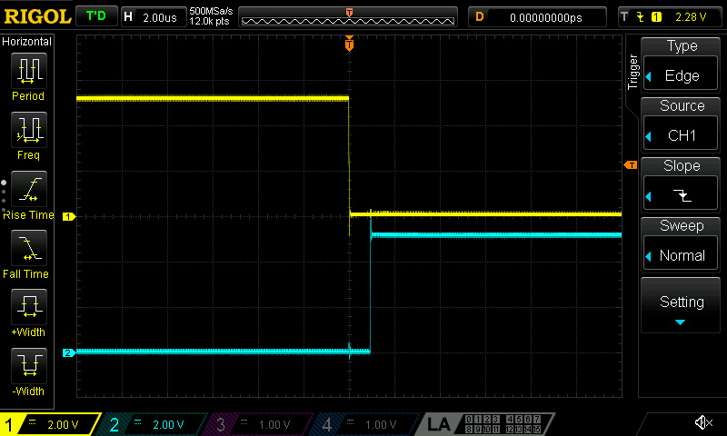
รูป: ช่วงเกิด Transition (A falling, B rising) ที่ไม่มี Overlap
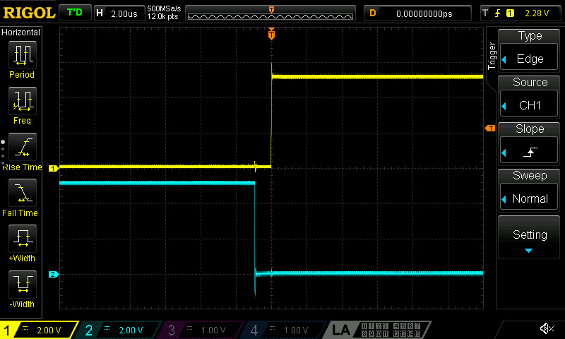
รูป: ช่วงเกิด Transition (A rising, B falling) ที่ไม่มี Overlap
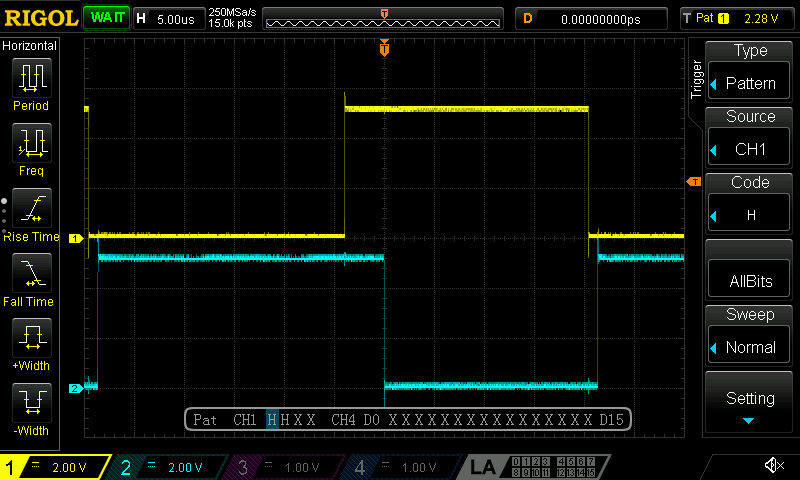
รูป: ช่วงเวลาที่มี Overlap fault (สัญญาณทั้งสองเป็น HIGH) และการเลือกใช้ทริกเกอร์ Pattern
สัญญาณทดสอบกรณีที่ 5#
สัญญาณทดสอบรูปแบบถัดไป เป็นสัญญาณ 2 ช่อง (A และ B) ที่มีลักษณะเป็นพัลส์เกิดซ้ำด้วยอัตราคงที่ และมีความกว้างพัลส์คงที่ โดยกำหนดเงื่อนไขว่า หลังจากเกิดพัลส์ที่สัญญาณ A แล้ว สัญญาณ B จะต้องเกิดพัลส์ตามภายในช่วงเวลาที่กำหนด หากสัญญาณ B ไม่เกิดขึ้นภายในช่วงเวลาดังกล่าว ให้ถือว่าเป็นเหตุการณ์ผิดพลาด
ในกรณีนี้ สามารถใช้ Trigger ของออสซิลโลสโคปที่อาศัยความสัมพันธ์เชิงเวลาระหว่างสองสัญญาณ (Timing / Delay Trigger) เพื่อตรวจจับเหตุการณ์ผิดพลาดได้ โดยกำหนดให้สัญญาณ A เป็นเหตุการณ์อ้างอิง และตรวจสอบว่าสัญญาณ B เกิดขึ้นภายในช่วงเวลาที่กำหนดหรือไม่
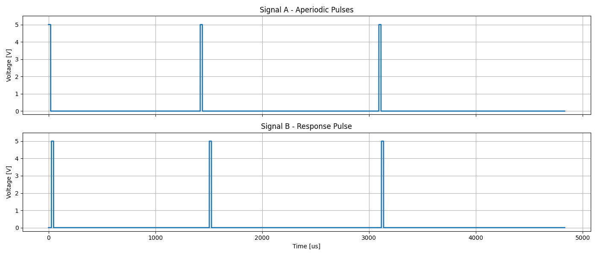
รูป: สัญญาณที่เกิดพัลส์ A (CH1) แล้วตามด้วยพัลส์ B (CH2)
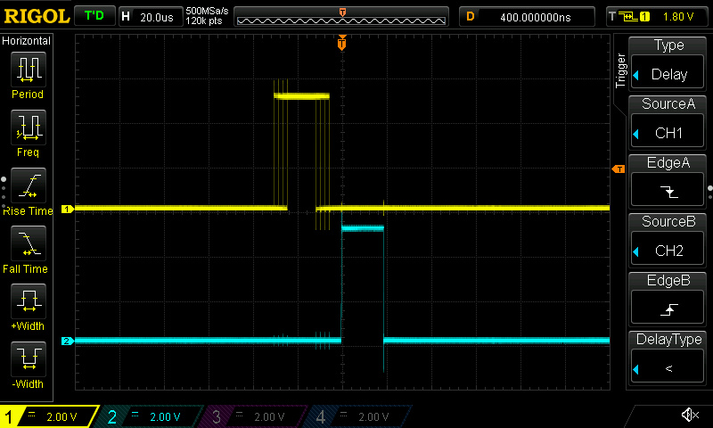
รูป: ตัวอย่างการตั้งค่าทริกเกอร์ Delay
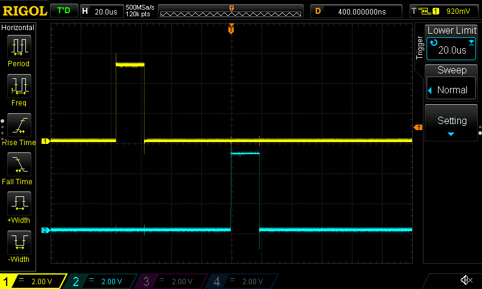
รูป: ทริกเกอร์ทำงานเมื่อระยะเวลาระหว่างพัลส์ของสัญญาณทั้งสอง มากกว่าค่าที่กำหนดไว้
▷ กล่าวสรุป#
บทความนี้ได้นำเสนอแนวทางการใช้บอร์ด Arduino เพื่อเขียนโปรแกรมสร้างสัญญาณทดสอบ และนำไปใช้ฝึกการตั้งค่า Trigger รวมถึงการวัดและวิเคราะห์สัญญาณด้วยออสซิลโลสโคป ซึ่งเป็นอีกทางเลือกหนึ่งนอกเหนือจากการใช้อุปกรณ์เฉพาะทาง เช่น เครื่องกำเนิดสัญญาณ (Function Generator)
แม้ว่าโค้ดตัวอย่างที่นำเสนอในบทความนี้จะพัฒนาสำหรับบอร์ด Arduino Uno R3 และ Arduino Nano แต่แนวคิดและรูปแบบการสร้างสัญญาณทดสอบสามารถนำไปประยุกต์ใช้กับบอร์ดไมโครคอนโทรลเลอร์ประเภทอื่นได้เช่นกัน
การสร้างสัญญาณทดสอบด้วยไมโครคอนโทรลเลอร์ หรืออาจจะใช้บอร์ด FPGA เขียนโค้ดด้วย VHDL / Verilog ก็ได้ ช่วยให้สามารถปรับแต่งลักษณะของสัญญาณและสร้างเหตุการณ์ผิดปกติสำหรับการทดลองได้อย่างยืดหยุ่น อีกทั้งยังช่วยลดต้นทุนในการจัดเตรียมอุปกรณ์สำหรับการเรียนรู้และการทดลองด้านออสซิลโลสโคปและระบบดิจิทัลอีกด้วย
บทความที่เกี่ยวข้อง
- การสร้างสัญญาณทดสอบด้วยบอร์ด Arduino Uno / Nano เพื่อการฝึกใช้ออสซิลโลสโคป (Arduino-based Test Signal Generation)
This work is licensed under a Creative Commons Attribution-ShareAlike 4.0 International License.
Created: 2026-05-28 | Last Updated: 2026-05-30